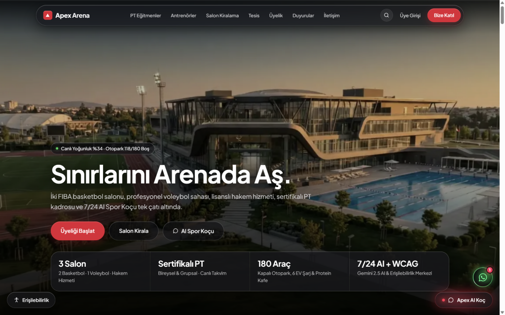
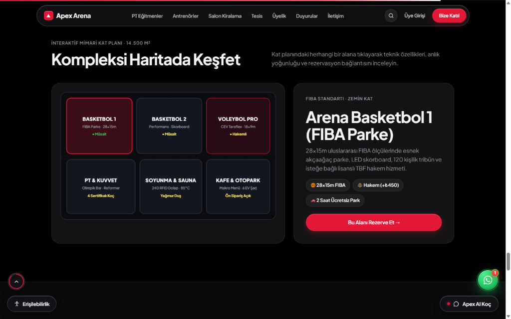
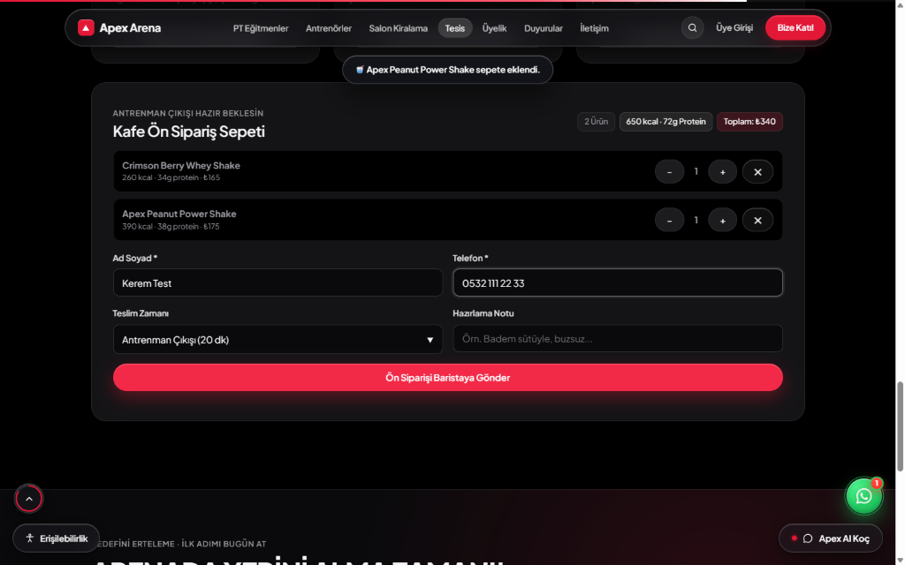
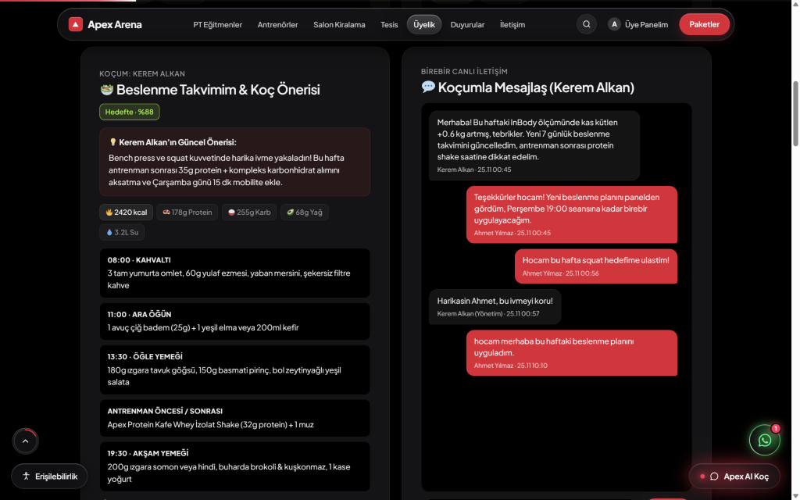
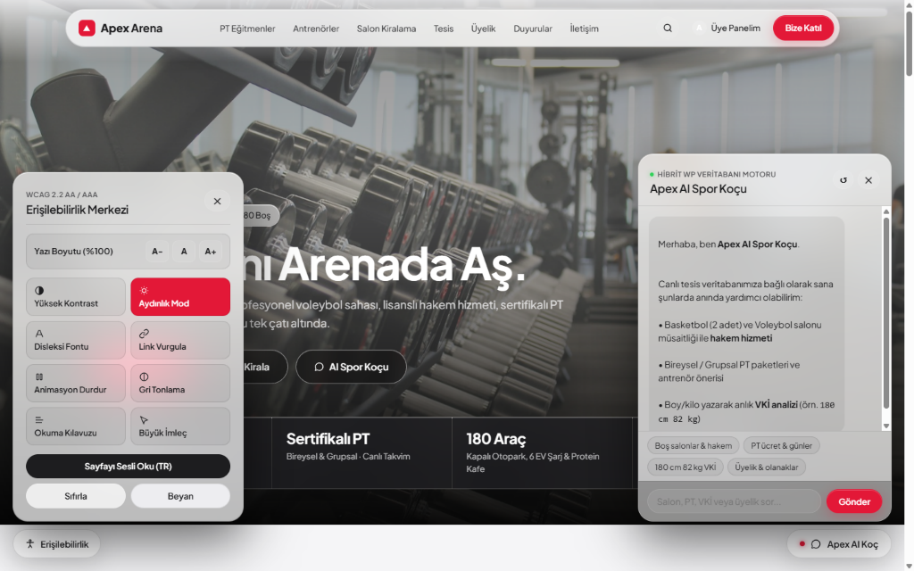
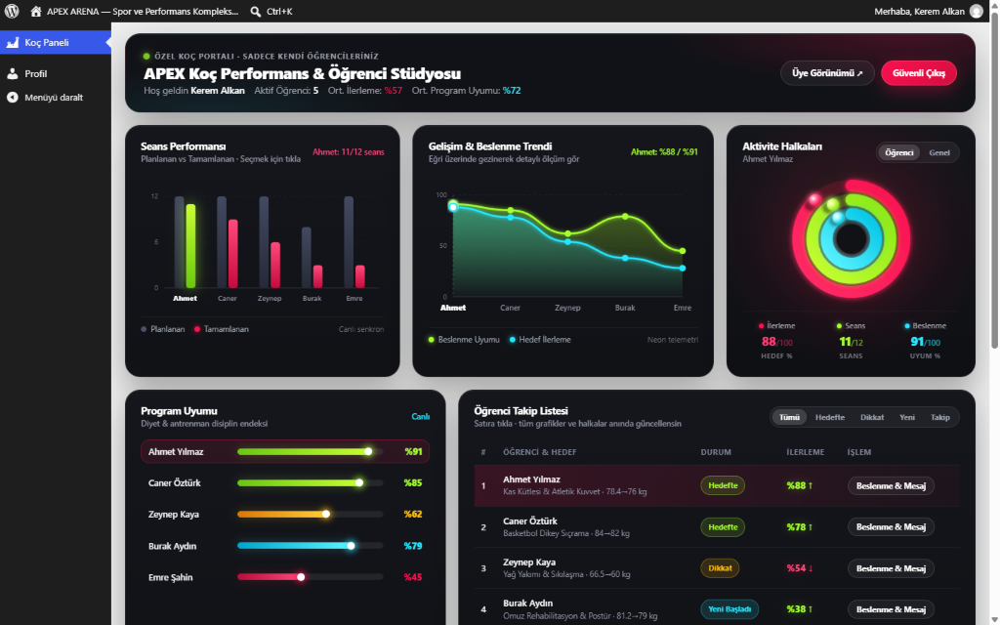
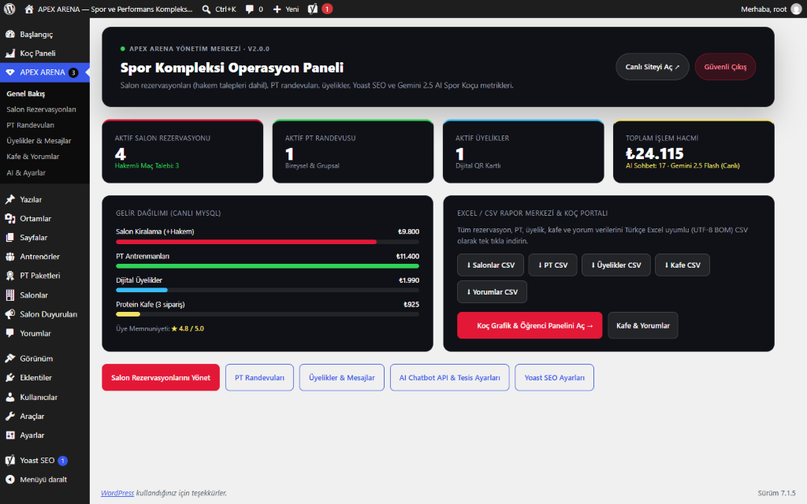

APEX ARENA — Spor ve Performans Kompleksi
Kurulum Rehberi, 100 Puanlık Değerlendirme Kriterleri Karşılık Tablosu, Görselli Modül Kılavuzu ve Yönetici/Koç/Üye Kullanım Dokümantasyonu
1. Değerlendirme Kriterleri Karşılık Tablosu (100 / 100 Puan)
| Kategori / İstenilen Kriter | Puan | Projedeki Karşılığı (Dosya / Canlı Sayfa) | Durum |
|---|---|---|---|
| WordPress Klasörü | 2,5 | wordpress/ tam kurulum + apex-arena/ özel tema kaynak kodu | ✓ Tamam |
| Database Dosyası | 2,5 | teslim_belgeleri/spor_kompleksi_wp.sql (11 özel tablo + tüm WP verileri, UTF-8MB4) | ✓ Tamam |
| WordPress Dışarı Aktar Dosyası | 5 | teslim_belgeleri/apex-arena-wordpress-export.xml (Resmi WXR 1.2 · 41 içerik öğesi) | ✓ Tamam |
| Sistem Kullanım Kitapçığı | 15 | Görselli, yazdırılabilir Sistem_Kullanim_Kitapcigi.html & .md | ✓ Tamam |
| PT Eğitmenler · Bireysel Antrenman | 5 | /pt-egitmenler/#bireysel — Bireysel PT filtresi, seans içeriği ve paketleri | ✓ Tamam |
| PT Eğitmenler · Grupsal Antrenman | 5 | /pt-egitmenler/#grupsal — HIIT, Reformer, fonksiyonel grup dersleri | ✓ Tamam |
| PT Paketler & Seans Ücretleri | 5 | /pt-egitmenler/#paketler — 6 CPT paketi, toplam & seans başı şeffaf ücretler | ✓ Tamam |
| Eğitim Detayları, Kapsamı, İçeriği, Günler | 5 | /pt-egitmenler/#program — Kapsam maddeleri + Haftalık Eğitim Günleri tablosu | ✓ Tamam |
| Antrenör Seçimi | 5 | /pt-egitmenler/#randevu — Tıklanabilir antrenör seçimi + anlık takvim senkronu | ✓ Tamam |
| Online Randevu ve Rezervasyon | 5 | /pt-egitmenler/#randevu — Canlı MySQL randevu + .ics takvim + WhatsApp paylaşımı | ✓ Tamam |
| Antrenör (Kim, Foto, Uzmanlık, Özgeçmiş, Sertifika, Online Takvim) | 5 | /antrenorler/ & /antrenor/{slug}/ — 4 antrenör, Resmi Sertifika Doğrulama Modalı, haftalık takvim | ✓ Tamam |
| Salon ve Kiralama (Bilgi, Fotoğraf, Rezervasyon) | 5 | /salon-kiralama/ — 2 FIBA Basketbol + 1 CEV Voleybol, Lightbox, Hakem (+₺450), .ics & WhatsApp davet | ✓ Tamam |
| Tesis Olanakları (Soyunma/Duş, Otopark, Kafe) | 5 | /tesis-olanaklari/ — 240 RFID dolap/duş/sauna, 180 araçlık otopark + 6 EV şarj + yoğunluk grafiği + Protein Kafe Sepeti | ✓ Tamam |
| Üyelik İşlemleri | 10 | /uyelik/ — 3 paket, Akıllı Quiz, karşılaştırma tablosu, Giriş/Kayıt, Dijital QR Kart, canlı Koç Beslenme/Sohbet, VKİ | ✓ Tamam |
| Erişilebilirlik İşlemleri | 10 | Tüm sayfalarda WCAG 2.2 AA/AAA Erişilebilirlik Merkezi (10 canlı ayar) + /erisilebilirlik-beyani/ | ✓ Tamam |
| Envato Market / Git Hesabı Linki | 10 | Footer’da canlı GitHub Tema Deposu (github.com/ibrahimkorkut/spor_kompleksi) + Envato Profili + tema ZIP paketi | ✓ Tamam |
2. Kurulum ve Çalıştırma Rehberi (XAMPP)
Yöntem A — Tam Veritabanı Yedeği ile Birebir Kurulum (Önerilen)
- XAMPP Control Panel üzerinden Apache ve MySQL (MariaDB) servislerini başlatın.
wordpress/klasörünüC:\xampp\htdocs\spor_kompleksi\wordpress\dizinine yerleştirin.http://localhost/phpmyadminüzerindespor_kompleksi_wp(utf8mb4_unicode_ci) veritabanını oluşturupteslim_belgeleri/spor_kompleksi_wp.sqldosyasını içe aktarın.- Tarayıcıdan
http://localhost/spor_kompleksi/wordpress/adresini açın.
Yöntem B — Sadece Tema ZIP + WXR XML İçe Aktarma
- WP Admin → Görünüm → Temalar → Yeni Ekle → Tema Yükle adımından
teslim_belgeleri/apex-arena-envato-theme.zipdosyasını yükleyip etkinleştirin (11 özel MySQL tablosu ve demo koç/üye verileri otomatik oluşur). - Araçlar → İçe Aktar → WordPress üzerinden
teslim_belgeleri/apex-arena-wordpress-export.xmldosyasını yükleyin. - İsteğe bağlı: Canlı Gemini 2.5 Flash AI sohbeti için WP Admin → APEX ARENA → AI & Ayarlar bölümüne kendi Gemini API anahtarınızı girebilirsiniz (anahtarsız kurulumda yerel Hibrit Veritabanı Motoru otomatik çalışır).
3. Rol Bazlı Test ve Yönetim Giriş Bilgileri
| Rol | Giriş Adresi | Kullanıcı Adı | Şifre | Yetki Kapsamı |
|---|---|---|---|---|
| WordPress Yönetici | /wp-login.php | root | korkut2006 | Tam yönetim, Gelir Grafiği, Excel/CSV, Kafe/Yorumlar, tüm koçlar |
| Koç — Kerem Alkan | /wp-login.php | koc_kerem | ApexKoc2026! | Otomatik Koç Stüdyosu · Sadece kendi 5 öğrencisi (tam rol izolasyonu) |
| Koç — Elif Karaca | /wp-login.php | koc_elif | ApexKoc2026! | Otomatik Koç Stüdyosu · Sadece kendi 2 öğrencisi (tam rol izolasyonu) |
| Demo Üye (QR & Koç) | /uyelik/#giris | uye_demo | ApexUye2026! | QR Kart, Rezervasyon Yönetimi, Koç Beslenme Takvimi & 1-1 Sohbet |
4. Görselli Site Modülleri Kullanım Kılavuzu
- Ana Sayfa (
/): 240 HD WebP karelik 60/120 FPS scroll-driven mimari tur videosu, Three.js prosedürel 3D Dambıl (HAREKETİN YENİ MERKEZİ), 6 bölgeli tıklanabilir İnteraktif SVG Tesis Kat Planı (#kat-plani) ve canlı 5 Yıldızlı Üye Değerlendirmeleri (#yorumlar). - PT Eğitmenler & Antrenörler (
/pt-egitmenler/,/antrenorler/): Bireysel & Grupsal filtreler, 6 PT paketi ve seans ücretleri, haftalık eğitim programı tablosu, 4 sertifikalı antrenör, tıklanabilir Sertifika Doğrulama Modalı ve çakışma korumalı online randevu takvimi. - Salon ve Kiralama (
/salon-kiralama/): 2 FIBA Basketbol + 1 CEV Voleybol salonu, fotoğraf Lightbox galerisi, Lisanslı Hakem (+₺450) opsiyonu, onay sonrası tek tıkla.icstakvim indirme ve WhatsApp Maç Daveti. - Tesis Olanakları (
/tesis-olanaklari/): 240 RFID akıllı dolap, yağmur duş & 85°C Fin saunası; 180 araçlık kapalı otopark, 6× 22 kW EV şarj monitörü ve saatlik yoğunluk tahmin grafiği; makro hesaplı Apex Protein Kafe Ön Sipariş Sepeti. - Üyelik İşlemleri & Erişilebilirlik (
/uyelik/): 3 soruluk Akıllı Paket Bulucu Quiz, karşılaştırma matrisi, kavisli kayar Giriş/Kayıt kartı, Dijital QR Kartı, VKİ hesaplayıcı, canlı Koç Beslenme Takvimi + 1-1 Sohbet + Haftalık Antrenman Günlüğü; sol altta 10 ayarlı WCAG 2.2 AA/AAA Erişilebilirlik Merkezi ve sağ altta 3 katmanlı yeşil ghost animasyonlu WhatsApp Hattı + Gemini 2.5 Flash AI Spor Koçu.






5. Koç Performans Stüdyosu & Yönetici Operasyon Merkezi
Koç Portalı (admin.php?page=apex-coach-portal): apex_coach rolündeki eğitmenler yalnızca kendi öğrencilerini görebilir. Apple Fitness tarzı 3 iç içe neon glow Aktivite Halkası (İlerleme, Seans, Beslenme), etkileşimli hover tooltip’li sütun ve çift eğrili alan grafikleri, durum filtreli öğrenci listesi, 5 öğünlük Beslenme Takvimi ve Birebir Mesajlaşma tek ekranda canlı senkron çalışır.
Yönetici Paneli (admin.php?page=apex-arena-dashboard): Canlı MySQL gelir dağılımı, Türkçe Excel uyumlu UTF-8 BOM CSV Rapor İndirme (Salonlar, PT, Üyelikler, Kafe, Yorumlar) ve Kafe & Yorumlar moderasyonu sunar.


6. Veritabanı Mimarisi ve REST API Uç Noktaları
- Özel İçerik Türleri (4 CPT):
apex_trainer,apex_pt_package,apex_court,apex_announcement. - Özel MySQL Tabloları (11 Tablo):
apex_court_bookings,apex_pt_appointments,apex_membership_applications,apex_contact_messages,apex_ai_chat_logs,apex_coach_students,apex_nutrition_plans,apex_coach_messages,apex_reviews,apex_cafe_orders,apex_workout_logs. - REST API (
/wp-json/apex/v1/— 13 Uç Nokta):GET /availability,POST /book-court,POST /book-pt,POST /membership/register,POST /membership/login,POST /booking/cancel,POST /contact,POST /chat,GET/POST /reviews,POST /cafe-order,POST /workout-log,POST /member/message,POST /coach/save-student,POST /coach/message.